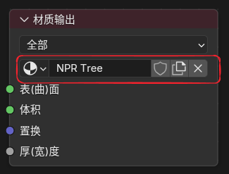
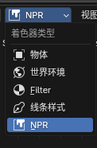
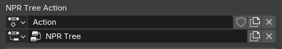
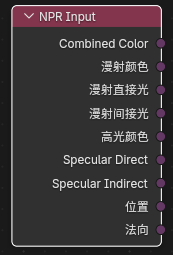
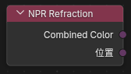
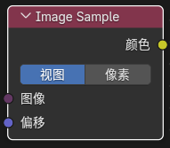
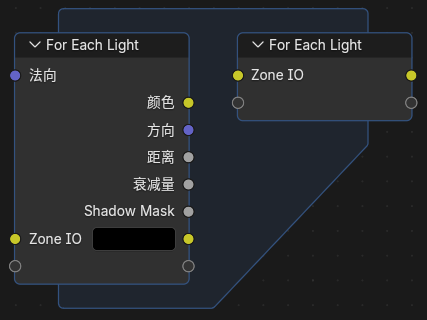

NPR Tree 工作流¶
1. 基本概念¶
NPR Tree 是挂在普通物体材质之外的第二套表现节点树，用来对 Eevee 的材质结果做 NPR 风格重组和二次表现。
普通物体材质依然负责基础表面着色，NPR Tree 负责额外的 NPR 表现层。
2. 挂接方式¶
- 在普通物体材质中保留正常的
Material Output和基础表面着色。 - 选中
Material Output节点。 - 在它的
NPR Tree属性里新建或指定一个节点组。

- 需要编辑这棵树时，在 Shader Editor 顶部把
Shader Type切到NPR。

3. 说明¶
- 材质的渲染方式需要设置为
抖动（延迟渲染） - 可以使用
Ctrl + Tab在物体和 NPR 之间快速切换 NPR Tree的关键帧与驱动器使用独立的NPR Tree Action，可在Material Properties > Animation > NPR Tree Action查看、切换或新建

4. 主要 NPR 节点¶
除了下面这些专用 NPR 节点以外，Curvature、Raycast、GLSL Function 和 GLSL Script Expression 现在也可以直接在 NPR Tree 中使用。
NPR Input¶

作用¶
读取 NPR 渲染阶段提供的输入缓冲。
输出¶
Combined ColorDiffuse ColorDiffuse DirectDiffuse IndirectSpecular ColorSpecular DirectSpecular IndirectPositionNormal
这些输出本质上更接近图像句柄 / 纹理句柄，适合继续交给 Image Sample 做邻域采样，或接到支持这类输入的 NPR 节点上继续处理。
NPR Refraction¶

作用¶
读取折射相关缓冲，类似 Screenspace Info。
输出¶
Combined ColorPosition
Image Sample¶
入口¶
Add > Utilities > Image Sample

输入输出¶
- 输入：
Image、Offset - 输出：
Color
作用¶
对 NPR Input / NPR Refraction 之类输出的图像句柄做采样。
偏移模式¶
View：按视空间偏移Pixel：按像素偏移
For Each Light¶
入口¶
Add > Utilities > For Each Light

说明¶
它会按当前影响表面的灯光逐个执行内部逻辑，每次循环输出一个灯光的信息。
内置可用信息¶
For Each Light Input 当前提供：
- 输入：
Normal - 输出：
Color - 输出：
Direction - 输出：
Distance - 输出：
Attenuation - 输出：
Shadow Mask
此外还支持在区域输入 / 输出上增添自定义 socket，用于在逐灯循环内部传递你自己的中间量。
5. 内置 NPR 节点组资产¶
当前版本已经把 Blender 4.4 NPR 版本中的一批常用节点组，迁移并整理成了 5.1 可用的资产包。
当前内置的主要节点组¶
CavityCo-Planar Edge DetectionCurvatureKuwaharaShading ModelsSurface Curvature
资产说明¶
- 这些节点组已经按 Blender 5.1 的格式迁移
- 由于重复区域节点名称修改了，4.4 NPR Prototype 的工程需要自己重新连接区域相关节点
Eevee 专用
NPR Tree 当前仅支持 Eevee，不支持 Cycles。